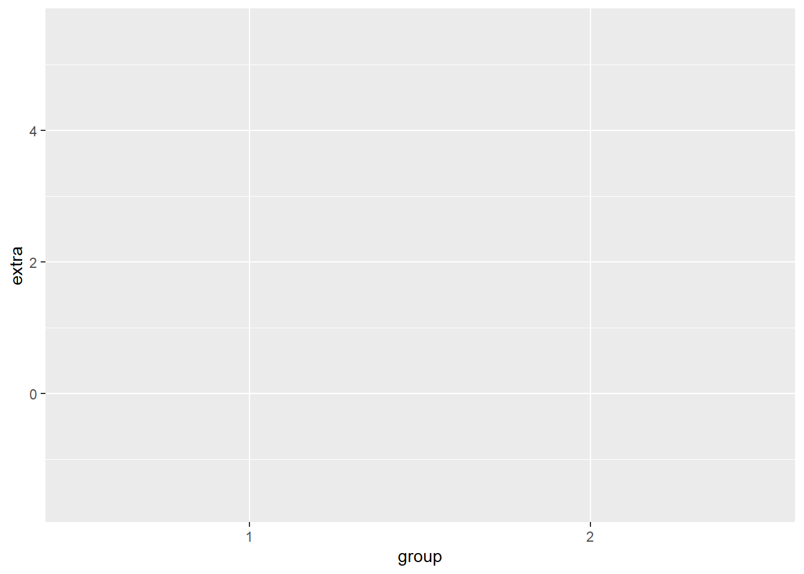
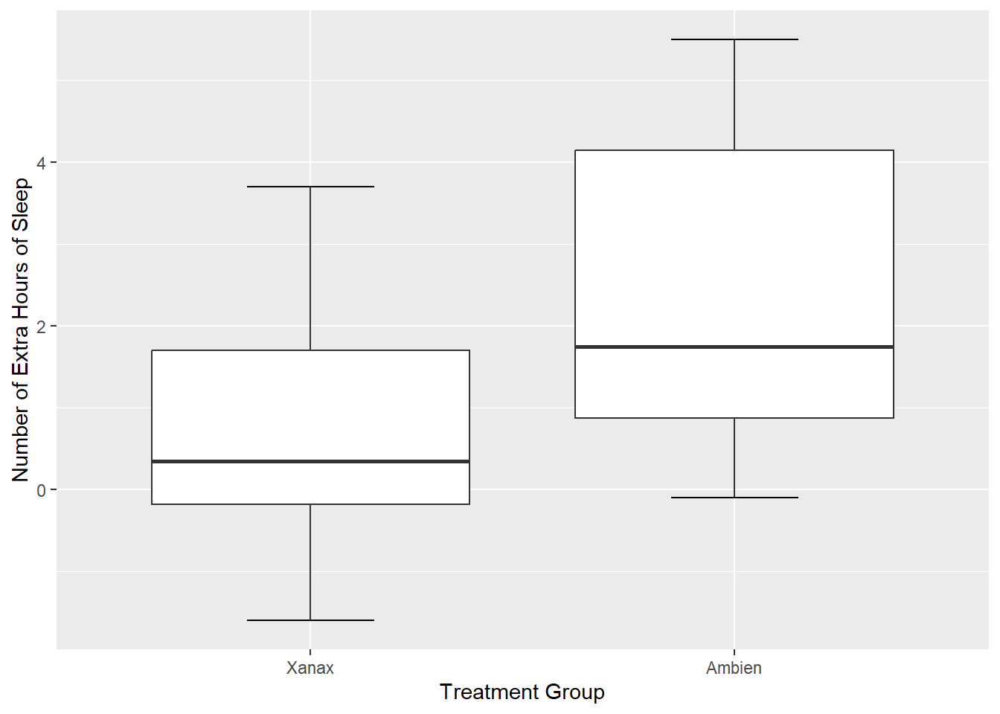
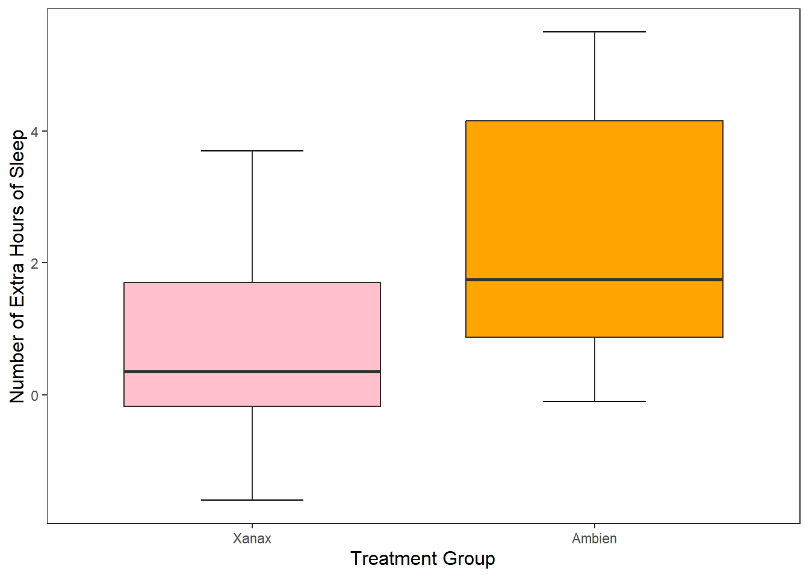
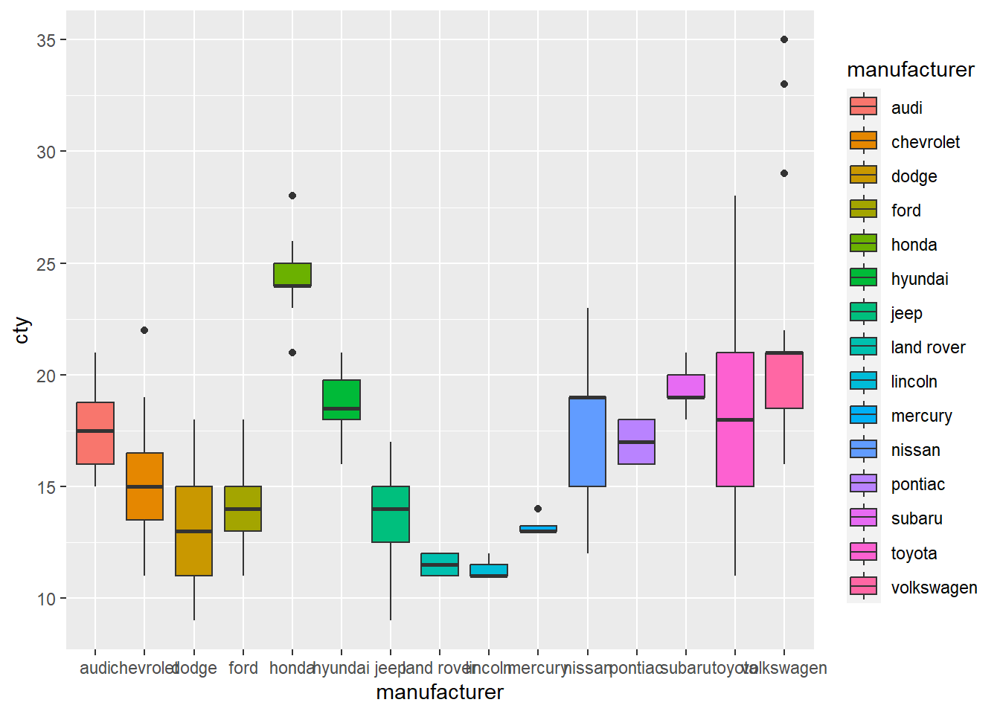
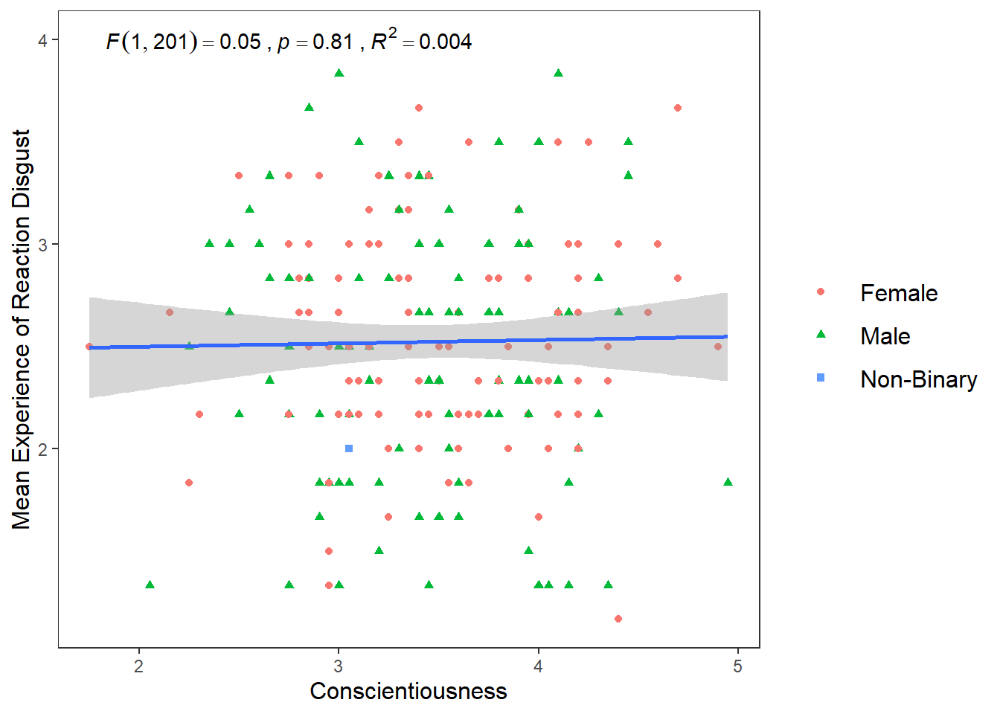
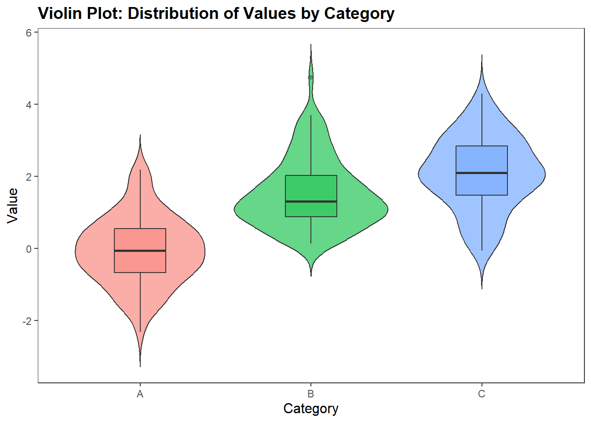
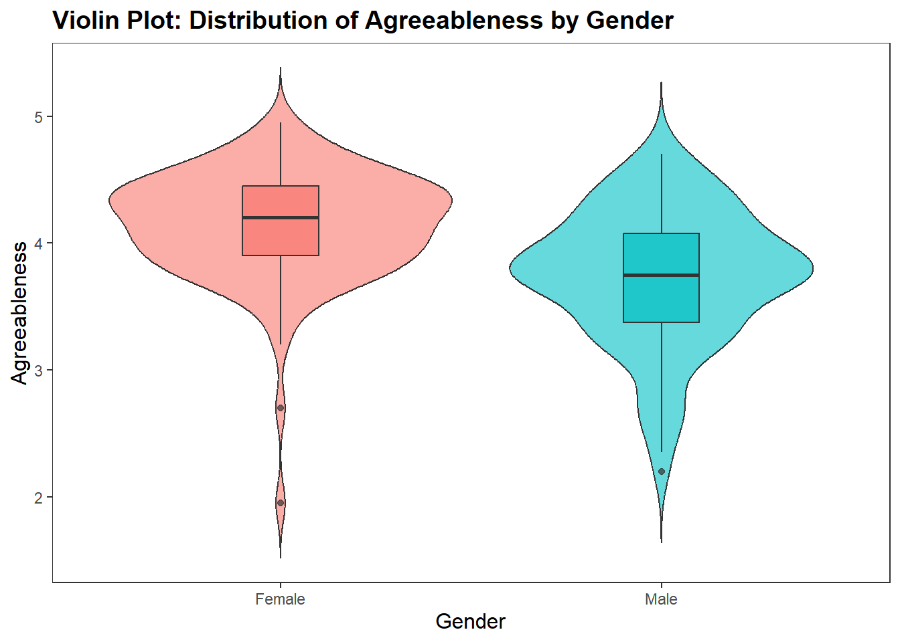
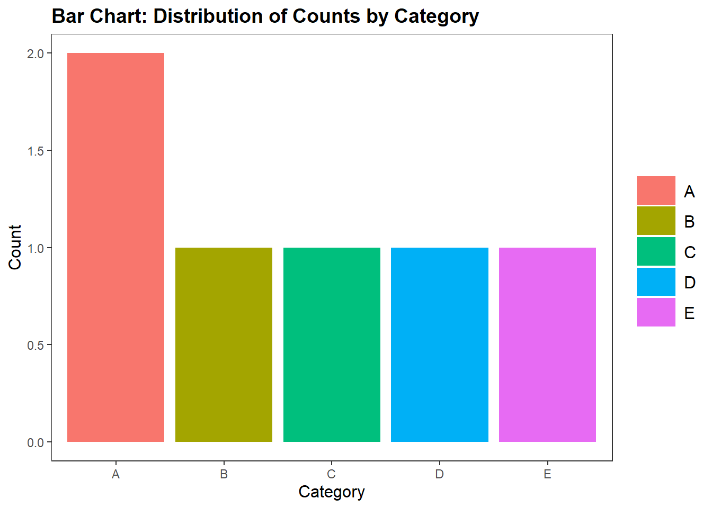
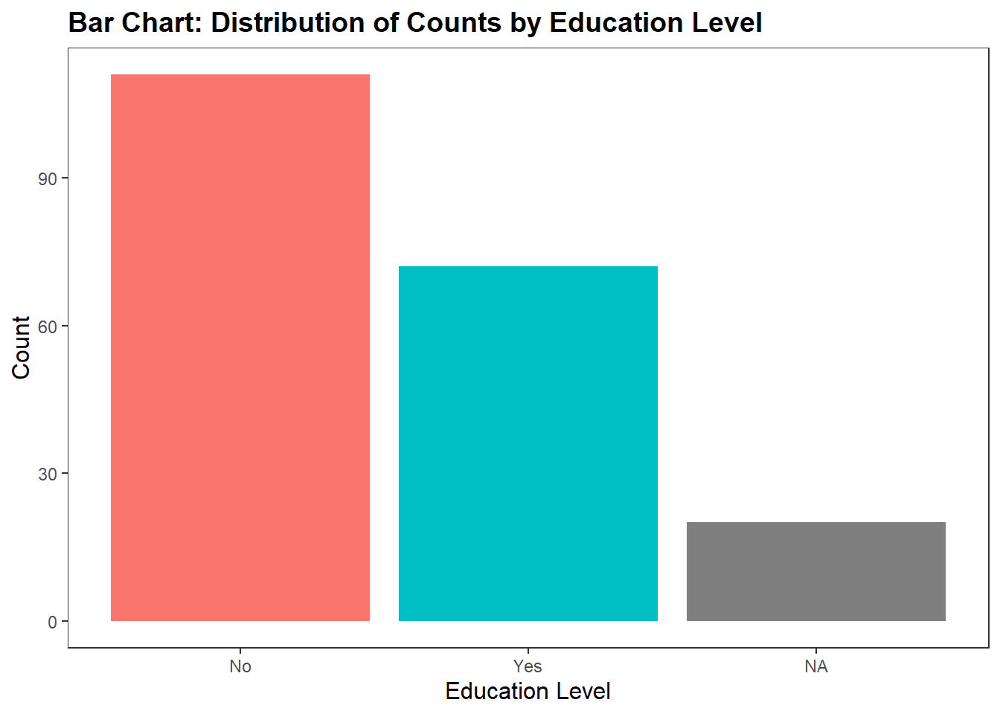

7 Data Visualisation in R
In this session, we are going to learn how to generate APA style plots in R. In particular, we are going to learn about the ggplot2 package and it’s associated function ggplot(). This package has been used to create plots for publications like the BBC and the Economist. By the end of this session you should be capable of:
- Understanding the logic of the ggplot method for drawing plots.
- Generating and customising elegant Box Plots, Violin Plots, Bar Charts, Scatterplots, Histograms, and Line Charts.
- Making your plots APA ready.
- Arranging and faceting (grouping together) your plots.
- Export your plots to PDFs.
7.1 Let’s Get Set Up
Open up RStudio or Posit Cloud and complete the following activities to get set up for today.
7.1.1 Activity: Set Up Your Working Directory
In your folder for this class, create a new folder called week6. Set this folder as your working directory. To do this, click Session -> Set Working Directory -> Choose Directory, then find your new folder, select it and click Open.
In your console, the path to that folder should now be printed. It should look something like this:
7.1.2 Activity: Prepare your R Script
Now in RStudio (or posit cloud), create an R script (try the keyboard shortcut: Ctrl-Shift-N on Windows, or command–shift–N on Mac) called 06-data-visualisation.R.
7.1.3 Activity: Install and Load Your Packages
We will be using the ggplot2, jtools, and patchwork in today’s session. Luckily, ggplot2 comes with Tidyverse, so we won’t need to install it if you have installed Tidyverse already. We will need to install patchwork. Copy and paste the following code to your R script. Copy and paste the code (minus the #) install.packages("patchwork") into your console first and press enter. Once that is installed, you can run the following code.
#install.packages("tidyverse") if tidyverse does not load for you, then you will need to run this command (minus the #) in your console first
library(tidyverse)
#install.packages(c("jtools", "patchwork"))
library(jtools) #this package enables us to make APA themed plots
library(patchwork) #this package enables us to arrange plots we have created7.1.4 Activity: Download and Import Your Files
We are going to need the following files for today’s session. You will find them in the Teams Channel under Channel 6 - Data Visualisation. The files are:
06-data-visualisation.Rpersonality_RD.csv
Download these files onto your computer.
Now let’s load in our data file. Make sure all your files are in your week6 folder. Once they are, copy and paste the following code.
7.2 Introduction to ggplot2
We analysed the sleep data frame in our first session. We created and exported a plot using the base R plot() function
plot(sleep$group, sleep$extra,
xlab = "Treatment Group",
ylab = "Number of Extra Hours of Sleep",
main = "Effect of Treament on Sleep Duration")
This is a perfectly fine plot, but one of the major advantages of using R over other programming languages or other statistical software is that it enables you to develop customisable, elegant, and even interactive plots. This is thanks to the ggplot package and the ggplot2() function.
What does the gg in ggplot stand for?
The gg stands for the Grammar of Graphics. This is because ggplot is built upon a logical system of how to draw a plot. This system involves a logical order where you incrementally add different layers to your plot. By understanding these system, you’ll be able to create excellent plots in no-time. Luckily, this structure is relatively straightforward to understand.
7.3 How to Draw a Plot
We are going to recreate the plot we made in the first session using ggplot. After that, I am going to show you how we can use this function to make our plot more visually striking and informative using the same function. We will be using the sleep data frame again, but I am going to refer to as df for short.
7.3.1 First we set up the Canvas
The first thing we do when we want to create a plot is call the ggplot() function and tell it what data frame we are working from. In this case, we are using the sleep data frame. For short, I am going to refer it as df and tell call ggplot()
 This creates a grey canvas where we can draw our plot on. The default R canvas is grey, but we can the appearance of the canvas later on.
This creates a grey canvas where we can draw our plot on. The default R canvas is grey, but we can the appearance of the canvas later on.
Now that our canvas is set up, we will want to specify some aesthetic properties to our plot, like the y-axis and x-axis. To achieve this, we need to tell R to map a variable in our df to the x-axis and another variable to the y-axis. In ggplot, there is an argument called mapping = aes() that enables us to do this, where aes is short for aesthetics. Let’s may the group variable to the x-axis and the extra variable to the y-axis.

Now we can see that our x-axis is mapped to the two values in our group variable, whereas the y-axis is mapped to the range of values in the extra variable.
7.3.2 Creating our Box Plot
This sets up the shape of our canvas, the next thing we need to do is specify what type of plot we want to create. In ggplot, this means draw a geom (i.e., geometrical shape) onto our plot. There are dozens of geoms (see table at end of the chapter) that we can draw to our plot and we can draw multiple at the same time.
Since we are creating a boxplot, we’ll use the geom_boxplot geom.
 We can see that R has now drawn box plots for each of our groups. The default style in
We can see that R has now drawn box plots for each of our groups. The default style in ggplot() is not to add the whiskey horizontal lines (e.g., the T) at the top and end of each boxplot. Generally, I am happy enough with the default option, but since we are recreating our first boxplot, let’s add these whisker lines.
To do this, we need to tell R to create a shape based on statistical properties of our data. In particular, we need to create a statistical errorbar for a box plot. We can do this through adding the following line of code in our plot.

Now we have our whisker lines. Now I am not perfeclty happy with the width of these error lines. We can change that by specifying width in our stat_boxplot() function
ggplot(df, mapping = aes(x = group, y = extra)) +
stat_boxplot(geom ='errorbar', width = .3) +
geom_boxplot()
7.3.3 Changing the Name of Our X-Axis and Y-Axis
Okay, our plot is looking better. The next thing we will want to do is add informative labels to our x and y-axis. We can do this by using the ggplot functions scale_x_discrete and scale_y_continous to draw our labels.
ggplot(df, mapping = aes(x = group, y = extra)) +
stat_boxplot(geom ='errorbar', width = .3) +
geom_boxplot() +
scale_x_discrete(name = "Treatment Group") +
scale_y_continuous(name = "Number of Extra Hours of Sleep") There now we have our x and y-labels. One thing that is bothering me is that our treatment group is labelled as
There now we have our x and y-labels. One thing that is bothering me is that our treatment group is labelled as 1 and 2. The sleep data frame does not provide us with any information on what each treatment group received. So I am going to take artistic liberties and say that 1 means Xanax and 2 means Ambien.
There are two aproaches we can take to add this to our plot.
The first approach would be to add labels to the x-axis, in scale_x_discrete().
ggplot(df, mapping = aes(x = group, y = extra)) +
stat_boxplot(geom ='errorbar', width = .3) +
geom_boxplot() +
scale_x_discrete(name = "Treatment Group",
labels = c("1" = "Xanax", #this changes the 1 in the x-axis to Xanax
"2" = "Ambien")) +
scale_y_continuous(name = "Number of Extra Hours of Sleep")
The second approach would be to first change the data frame itself. We can do this using our old friend mutate(). I am going to create a variable called treatment that recode() the values in the group variable.
df <- mutate(df, treatment = recode(group, #recode changes variable values
`1` = "Xanax",
`2` = "Ambien"))
df$treatment## [1] Xanax Xanax Xanax Xanax Xanax Xanax Xanax Xanax Xanax Xanax
## [11] Ambien Ambien Ambien Ambien Ambien Ambien Ambien Ambien Ambien Ambien
## Levels: Xanax AmbienNow we can recreate our plot, but this time put treatment in the x-axis instead of group.
ggplot(df, mapping = aes(x = treatment, y = extra)) + #substitute treatment for group
stat_boxplot(geom ='errorbar', width = .3) +
geom_boxplot() +
scale_x_discrete(name = "Treatment Group") +
scale_y_continuous(name = "Number of Extra Hours of Sleep")
This produces the same plot. In this example, I prefer the second method. But I will explain why a little bit later.
Now, let’s change the look of our canvas.
7.3.4 Changing the Look (Theme) of Our Canvas
One of the nice features of ggplot() is can change the theme of our canvas. There are several themes that we can use (see table at the end of the chapter for more information). The current theme we are using is theme_gray, which is the default theme.
ggplot(df, mapping = aes(x = treatment, y = extra)) + #substitute treatment for group
stat_boxplot(geom ='errorbar', width = .3) +
geom_boxplot() +
scale_x_discrete(name = "Treatment Group") +
scale_y_continuous(name = "Number of Extra Hours of Sleep") +
theme_gray() That is perfectly fine, but I dislike the grey. We could also set it to
That is perfectly fine, but I dislike the grey. We could also set it to theme_bw (white background and black gridlines).
ggplot(df, mapping = aes(x = treatment, y = extra)) + #substitute treatment for group
stat_boxplot(geom ='errorbar', width = .3) +
geom_boxplot() +
scale_x_discrete(name = "Treatment Group") +
scale_y_continuous(name = "Number of Extra Hours of Sleep") +
theme_bw()
We could set it to a dark theme, using theme_dark()
ggplot(df, mapping = aes(x = treatment, y = extra)) + #substitute treatment for group
stat_boxplot(geom ='errorbar', width = .3) +
geom_boxplot() +
scale_x_discrete(name = "Treatment Group") +
scale_y_continuous(name = "Number of Extra Hours of Sleep") +
theme_dark()
Or we could remove the grid lines and have a more classic approach, using theme_classic()
ggplot(df, mapping = aes(x = treatment, y = extra)) + #substitute treatment for group
stat_boxplot(geom ='errorbar', width = .3) +
geom_boxplot() +
scale_x_discrete(name = "Treatment Group") +
scale_y_continuous(name = "Number of Extra Hours of Sleep") +
theme_classic() Since we are psychologists, we will mostly looking for plots in
Since we are psychologists, we will mostly looking for plots in APA style. When you download ggplot() there is no pre-installed theme that matches this style. However, the jtools package we installed and loaded comes with an apa_theme(). Make sure that is loaded before running the following code:
ggplot(df, mapping = aes(x = treatment, y = extra)) + #substitute treatment for group
stat_boxplot(geom ='errorbar', width = .3) +
geom_boxplot() +
scale_x_discrete(name = "Treatment Group") +
scale_y_continuous(name = "Number of Extra Hours of Sleep") +
theme_apa() And now we have a pretty nice looking plot. Let’s change the colour, to match our original plot we created in week 1 by adding
And now we have a pretty nice looking plot. Let’s change the colour, to match our original plot we created in week 1 by adding fill = "grey" inside geom_boxplot().
ggplot(df, mapping = aes(x = treatment, y = extra)) + #substitute treatment for group
stat_boxplot(geom ='errorbar', width = .3) +
geom_boxplot(fill = "grey") +
scale_x_discrete(name = "Treatment Group") +
scale_y_continuous(name = "Number of Extra Hours of Sleep") +
theme_apa()
7.4 The Real Power of ggplot - Customisation
You might be wondering right now how useful is ggplot really. I mean, if you compare the two code chunks to create essentially the same plot, you’ll notice that approach we took in week 1 is significantly shorter.
#base R approach
plot(sleep$group, sleep$extra,
xlab = "Treatment Group",
ylab = "Number of Extra Hours of Sleep",
main = "Effect of Treament on Sleep Duration")
#ggplot approach
ggplot(df, mapping = aes(x = treatment, y = extra)) +
stat_boxplot(geom ='errorbar', width = .3) +
geom_boxplot(fill = "grey") +
scale_x_discrete(name = "Treatment Group") +
scale_y_continuous(name = "Number of Extra Hours of Sleep") +
theme_apa()The real power of ggplot is the ability to customize our graphs to make them more striking and informative. We have seen glimpses of this already with the ability to add labels, colour, and themes to our plots. In this section, I am going to show you more ways we can customise our plot.
7.4.1 Mapping Aesthetic Properties (like Colour and Fill) to Our Variables
In the last section, I used the argument fill = grey to specify the colour of boxplots. If I wanted multiple colours, I could have used the c() function in that argument:
ggplot(df, mapping = aes(x = treatment, y = extra)) +
stat_boxplot(geom ='errorbar', width = .3) +
geom_boxplot(fill = c("green", "orange")) +
scale_x_discrete(name = "Treatment Group") +
scale_y_continuous(name = "Number of Extra Hours of Sleep") +
theme_apa()
This approach is okay if are only specifying a limited number of colours, but if there are several colours we need to specify, it is cumbersome. Luckily, we can ask R to map the colours of boxplot to specific values in our data frame. We do this through a similar approach used in ggplot() where we add the argument mapping = aes() to our geom_boxplot() function. This time inside the aes() argument, we specify that we want the fill (the colour inside our boxplots) to map to the variable treatment.
ggplot(df, mapping = aes(x = treatment, y = extra)) +
stat_boxplot(geom ='errorbar', width = .3) +
geom_boxplot(mapping = aes(fill = treatment)) +
scale_x_discrete(name = "Treatment Group") +
scale_y_continuous(name = "Number of Extra Hours of Sleep") +
theme_apa()
R will choose colours that are visually distinct from each other. Additionally, it will add a legend to our graph. If you want to remove the legend, add show.legend = FALSE to the geom_boxplot() function.
7.4.2 Changing the Value of Our Y-Axis
I can tell R to specify the number of breaks on the y-axis. At the moment, it is only showing breaks in increments of two. R will try find a straightforward solution to the number of points on the y-axis. We can override this by using the breaks() argument in scale_y_continous, which will add a break between each number specified.
ggplot(df, mapping = aes(x = treatment, y = extra)) +
stat_boxplot(geom ='errorbar', width = .3) +
geom_boxplot(mapping = aes(fill = treatment)) +
scale_x_discrete(name = "Treatment Group") +
scale_y_continuous(name = "Number of Extra Hours of Sleep",
breaks = c(-2:6) #this will add a break for each value between -2 and +6
) +
theme_apa()### Changing the Orientation
We can also change the orientation of our graph in ggplot(). All we need to do is change the x and y values in the ggplot() call. And then we just need to change scale_y_continuous to scale_y_discrete, and scale_x_discrete to scale_x_continuous.
ggplot(df, mapping = aes(x = extra, y = treatment)) +
stat_boxplot(geom ='errorbar', width = .3) +
geom_boxplot(mapping = aes(fill = treatment)) +
scale_y_discrete(name = "Treatment Group") +
scale_x_continuous(name = "Number of Extra Hours of Sleep",
breaks = c(-2:6) #this will add a break for each value between -2 and +6
) +
theme_apa()
This option is really handy if you have lots of different categorical groups and your struggling to fit your graph onto the page. Let me demonstrate with the mpg data set that is already installed when you download R.
#This first plot if really squished together on the x-axis
ggplot(mpg, mapping = aes(x = manufacturer, y = cty)) + #cty = number of cylinders
geom_boxplot()
7.4.3 Plotting our Data Points in the Graph
What if I wanted to add individual data points to our graph? To provide more information on the scatter of scores? There are two options I can use. The first option is to the use the geom_point(), which will each participant’s data point to the graph. Since there are only two possible observations in the x-axis, all data points will be printed in a straight line for each observation.
ggplot(df, mapping = aes(x = treatment, y = extra)) +
stat_boxplot(geom ='errorbar', width = .3) +
geom_boxplot(mapping = aes(fill = treatment)) +
scale_x_discrete(name = "Treatment Group") +
scale_y_continuous(name = "Number of Extra Hours of Sleep",
breaks = c(-2:6) #this will add a break for each value between -2 and +6
) +
theme_apa() +
geom_point() #will add individual scores onto to the graph
This is a perfectly legitimate approach to take. There is not a lot of data, so we can make our each individual point, even if there is some overlap. However, we can use another approach called geom_jitter(). This will plot each individual point just like geom_point() does, but it will add some random movement (i.e. a jitter) to each point. This can prevent overplotting of individual points.
ggplot(df, mapping = aes(x = treatment, y = extra)) +
stat_boxplot(geom ='errorbar', width = .3) +
geom_boxplot(mapping = aes(fill = treatment)) +
scale_x_discrete(name = "Treatment Group") +
scale_y_continuous(name = "Number of Extra Hours of Sleep",
breaks = c(-2:6) #this will add a break for each value between -2 and +6
) +
theme_apa() +
geom_jitter() #will add individual scores onto to the graph and give them space away from each other
The added space left or right for each data point is randomly generated. But we can reduce the upper and lower bounds of that random generation. Let’s do that for our current plot.
ggplot(df, mapping = aes(x = treatment, y = extra)) +
stat_boxplot(geom ='errorbar', width = .3) +
geom_boxplot(mapping = aes(fill = treatment)) +
scale_x_discrete(name = "Treatment Group") +
scale_y_continuous(name = "Number of Extra Hours of Sleep",
breaks = c(-2:6) #this will add a break for each value between -2 and +6
) +
theme_apa() +
geom_jitter(width = .20) #changes the horizontal jitter7.4.4 Adding Statistical Information to Our Plot
We can also add statistical summary information to our plot. Right now our boxplot tells us about individual scores, the median score, and the range of values. What if we wanted it to visualise the mean score treatment group?
No problem. To do this, we need to tell R to draw a geom shape in the position of the mean score. The easiest geom to do this with is geom_point().
ggplot(df, mapping = aes(x = treatment, y = extra)) +
stat_boxplot(geom ='errorbar', width = .3) +
geom_boxplot(mapping = aes(fill = treatment)) +
scale_x_discrete(name = "Treatment Group") +
scale_y_continuous(name = "Number of Extra Hours of Sleep",
breaks = c(-2:6) #this will add a break for each value between -2 and +6
) +
theme_apa() +
geom_jitter(width = .20) +
geom_point(stat = "summary", fun = "mean", size = 5, colour = "black")
This draws a dot exactly where the mean value falls for both the Xanax and Ambien treatment groups fall. I changed the size of the point to make it more visible salient than the other data points. We could have also change the colour (try it!)
7.4.5 Adding Text to Our Plot
We can also add the results of our t-test we ran in the first session to the plot. We do this by using the annotate() function.
ggplot(df, mapping = aes(x = treatment, y = extra)) +
stat_boxplot(geom ='errorbar', width = .3) +
geom_boxplot(mapping = aes(fill = treatment)) +
scale_x_discrete(name = "Treatment Group") +
scale_y_continuous(name = "Number of Extra Hours of Sleep",
breaks = c(-2:6) #this will add a break for each value between -2 and +6
) +
theme_apa() +
geom_jitter(width = .20) +
geom_point(stat = "summary", fun = "mean", size = 5, colour = "black") +
annotate("text",
label = "t(9) = 4.061, p = .002**.",
x = "Ambien",
y = 5.5,
hjust = 2.2,
vjust = 1,
size = 4)7.4.6 Exporting our Plot
We can export our plot easily using the ggsave() function. Inside the function, you specify the file name. It will save the file into your working directory.
By default, this function will export the last plot that you displayed. That is why it always best this function directly underneath the plot you made in your code.
ggplot(df, mapping = aes(x = treatment, y = extra)) +
stat_boxplot(geom ='errorbar', width = .3) +
geom_boxplot(mapping = aes(fill = treatment)) +
scale_x_discrete(name = "Treatment Group") +
scale_y_continuous(name = "Number of Extra Hours of Sleep",
breaks = c(-2:6) #this will add a break for each value between -2 and +6
) +
theme_apa() +
geom_jitter(width = .20) +
geom_point(stat = "summary", fun = "mean", size = 5, colour = "black") +
annotate("text",
label = "t(9) = 4.061, p = .002**.",
x = "Ambien",
y = 5.5,
hjust = 2.2,
vjust = 1,
size = 4)
ggsave("sleep_boxplot.pdf")You should find the file sleep_boxplot.pdf in your working directory now. Open it up and have a look.
7.5 Drawing a Scatter Plot
Okay, so we talked a lot step by step how to create a box plot. Let’s talk in somewhat less detail about how to create a scatter plot. After we have covered those two charts, the rest of this chapter will serve as a reference guide for creating other charts you might be interested in making (e.g., bar charts, line charts, histograms, violin plots).
7.5.1 Context
In one of my PhD studies, I investigated the relationships between basic emotional states (Anger, Disgust, Fear, Joy, Sadness, and Surprise) and the Big Five personality traits and their sub-traits. I was interested in knowing whether personality traits make one more or less likely to a) experience certain emotions and b) be more sensitive to those emotions. To achieve this, I collected data on the personality traits along with participant’s daily experience of basic emotional states (baseline) and their reactive emotional experience after watching a series of emotionally provocative video clips (post-stimulus)
Let’s load in my data frame and see what it looks like:
## 'data.frame': 203 obs. of 35 variables:
## $ hash : chr "00df03f53d53a2e3e32052b1c5a6a34f958773d6" "04a579b9da02f9d2fae2b28775c81b623aac8e9b" "051e9ca781614d3ea9f487741e131024495b237b" "055e431c004175cb182f8790803f37f156cf35ed" ...
## $ Openness_experience: num 3.55 3.45 2 3.65 3.2 3.35 3.95 3.1 4.25 4.45 ...
## $ Intellect : num 4.2 3.4 1.9 4.2 2.8 3.8 3.6 3.5 4.1 4.3 ...
## $ Openness : num 2.9 3.5 2.1 3.1 3.6 2.9 4.3 2.7 4.4 4.6 ...
## $ Conscientiousness : num 3.4 2.9 4.2 2.75 2.9 3.95 3.2 3.8 3.55 2.85 ...
## $ Industriousness : num 3.9 3.4 4.4 3 3 4.3 2.3 4.3 3.8 2.9 ...
## $ Orderliness : num 2.9 2.4 4 2.5 2.8 3.6 4.1 3.3 3.3 2.8 ...
## $ Extraversion : num 3.1 3.25 4.3 3.2 3.35 3.7 3.3 3.55 2.75 3.7 ...
## $ Assertiveness : num 3.3 3.3 4.6 2.9 3.1 3.1 2.6 3.2 3 3.6 ...
## $ Enthusiasm : num 2.9 3.2 4 3.5 3.6 4.3 4 3.9 2.5 3.8 ...
## $ Agreeableness : num 3.85 3.65 1.95 3.85 3.7 3.95 4.45 4.2 4 4.2 ...
## $ Compassion : num 3.7 3.7 2.1 4 3.5 3.9 5 4.1 3.9 4.6 ...
## $ Politeness : num 4 3.6 1.8 3.7 3.9 4 3.9 4.3 4.1 3.8 ...
## $ Neuroticism : num 1.9 3.05 3.05 3.35 2.7 1.95 4.4 1.8 3.1 3.1 ...
## $ Volatility : num 1.8 3.6 3.6 3 2.3 2.1 4.3 1.6 3 3.1 ...
## $ Withdrawal : num 2 2.5 2.5 3.7 3.1 1.8 4.5 2 3.2 3.1 ...
## $ Anger_reaction : num 2.17 1.33 2.17 1.33 2.17 ...
## $ Disgust_reaction : num 2.67 1.67 2.17 1.33 3.33 ...
## $ Fear_reaction : num 2.5 1.33 1.67 1.5 3.17 ...
## $ Joy_reaction : num 2.17 3.17 2.17 2.17 2.67 ...
## $ Sadness_reaction : num 2 2 1.33 2.17 3.33 ...
## $ Surprise_reaction : num 3.67 3 2.33 1.83 4.67 ...
## $ Anger_baseline : int 1 1 3 1 1 1 3 1 1 2 ...
## $ Disgust_baseline : int 1 1 4 1 1 1 2 1 1 1 ...
## $ Fear_baseline : int 1 1 1 2 2 1 2 1 2 1 ...
## $ Joy_baseline : int 2 2 3 3 4 3 2 3 3 3 ...
## $ Sadness_baseline : int 1 1 1 2 3 1 4 1 3 2 ...
## $ Surprise_baseline : int 1 3 1 2 1 2 1 1 2 2 ...
## $ Country_Birth : chr "Ireland" "Pakistan" "United Kingdom" "United Kingdom" ...
## $ Gender : chr "Male" "Male" "Female" "Male" ...
## $ Education : chr "Bachelor's Degree" "Bachelor's Degree" "Master's Degree" "Bachelor's Degree" ...
## $ Language : chr "English" "English" "English" "English" ...
## $ Nationality : chr "Irish" "British" "English" "English" ...
## $ Publication : chr "Yes" "No" "No" "No" ...
## $ Age : int 50 54 31 36 42 24 29 30 65 41 ...You’ll notice that is a large data frame (or at least large than ones we have been dealing with so far), with 35 variables and 203 participants. Feel free to have a thorough look at it using View(). But that each emotion is measured twice, once at the start of the study(e.g., Anger_baseline) and once as an average reaction to several video clips (Anger_reaction).
One of my hypotheses was that Extraverts are more sensitive to experiencing Joy than Introverts. Many researchers claim that one of the driving differences between Extraverts and Introverts is that Extraverts are more sensitive to experiencing positive emotion, making them more excitable and sociable. If this is true, then I would expect there to be a positive relationship between my Extraversion and Joy_reaction variables.
7.5.2 Drawing our Plot
Let’s visualize this relationship by creating a scatterplot in R. There are several steps we need to take to do this.
First, let’s call the ggplot() function, mapping Extraversion to the x-axis and Joy_reaction to the y-axis with the mapping = aes() call.

Now let’s add our geometrical shape. For scatter plots, this is our old friend geom_point().
I am happy with the x-axis, but I would like the make the y-axis look more professional. So let’s use scale_y_continous() to change its label.
ggplot(df_personality, mapping = aes(x = Extraversion, y = Joy_reaction)) +
geom_point() +
scale_y_continuous(name = "Mean Experience of Joy (Reaction)") Let’s make our plot prettier by adding the APA theme.
ggplot(df_personality, mapping = aes(x = Extraversion, y = Joy_reaction)) +
geom_point() +
scale_y_continuous(name = "Mean Experience of Joy (Reaction)") +
theme_apa() It’s good to provide some information on the relationship between two variables on a scatter plot. We can do this by adding a regression line that best fits their relationship. To do this in R, we add a
It’s good to provide some information on the relationship between two variables on a scatter plot. We can do this by adding a regression line that best fits their relationship. To do this in R, we add a geom called geom_smooth, where we specify the model (method) we want to fit onto our data.
ggplot(df_personality, mapping = aes(x = Extraversion, y = Joy_reaction)) +
geom_point() +
scale_y_continuous(name = "Mean Experience of Reaction Joy", breaks = c(1:5)) +
scale_x_continuous(breaks = c(1:5)) +
theme_apa() +
geom_smooth(method = lm, show.legend = FALSE)## `geom_smooth()` using formula = 'y ~ x' The function
The function geom_smooth fits a model onto our data. When you specify method = lm, this mean that you are fitting a linear regression onto your data. I also set show.legend = FALSE because it create an annoying figure that we don’t need.
We’ll learn more running regressions in the next two workshops, but give you a preview, we compute a simple linear regression through the following code:
##
## Call:
## lm(formula = Joy_reaction ~ Extraversion, data = df_personality)
##
## Residuals:
## Min 1Q Median 3Q Max
## -1.18510 -0.39468 -0.00537 0.38658 1.45300
##
## Coefficients:
## Estimate Std. Error t value Pr(>|t|)
## (Intercept) 1.47399 0.22543 6.539 5.02e-10 ***
## Extraversion 0.15629 0.06679 2.340 0.0203 *
## ---
## Signif. codes: 0 '***' 0.001 '**' 0.01 '*' 0.05 '.' 0.1 ' ' 1
##
## Residual standard error: 0.5584 on 201 degrees of freedom
## Multiple R-squared: 0.02652, Adjusted R-squared: 0.02167
## F-statistic: 5.475 on 1 and 201 DF, p-value: 0.02027Based on our plot and our linear regression model, we can see there is a small positive relationship between Extraversion and Joy (reaction) that is statistically significant. Let’s add this information to our plot using the annote() function.
ggplot(df_personality, mapping = aes(x = Extraversion, y = Joy_reaction)) +
geom_point() +
scale_y_continuous(name = "Mean Experience of Reaction Joy", breaks = c(1:5)) +
scale_x_continuous(breaks = c(1:5)) +
theme_apa() +
geom_smooth(method = lm, show.legend = F) +
annotate("text", x = 2.5, y = 3.6,
label = "F(1, 201) = 5.48, p = .02, R^2 = 0.02")## `geom_smooth()` using formula = 'y ~ x'
While this gets the message across, it is annoying that F, p, and R are not italicised. Additionally, how can we superscript the 2 in R^2? We can use the expression() function inside label. The syntax is a bit clunky, but it will get the job done.
ggplot(df_personality, mapping = aes(x = Extraversion, y = Joy_reaction)) +
geom_point() +
scale_y_continuous(name = "Mean Experience of Reaction Joy", breaks = c(1:5)) +
scale_x_continuous(breaks = c(1:5)) +
theme_apa() +
geom_smooth(method = lm, show.legend = F) +
annotate("text", x = 2.5, y = 3.6,
label = expression(italic("F")(1, 201) == 5.48~","~italic("p") == .02~","~italic("R")^2 == 0.02))## `geom_smooth()` using formula = 'y ~ x'
That looks nice and our scatter plot is ready to be exported.
7.5.3 Customising our Scatterplot based on Gender
But before we move on, I want to show you a few other things we can do when we create scatter plots. For example, what if we were interested in checking whether the relationship between Joy (Reaction) and Extraversion was similar for both males and females? How could we visualize this?
We can map the colour of the points and their shape to the variable Gender. There are two ways we can do this, through the ggplot() function or in the geom_point(). The way you do will have ramifications for how the data visualisation will appear. It’s easier to show this than to explain. So let’s first change the colour and shape in the ggplot() function by mapping these properties to Gender.
ggplot(df_personality, mapping = aes(x = Extraversion, y = Joy_reaction, colour = Gender, shape = Gender)) +
geom_point() +
scale_y_continuous(name = "Mean Experience of Reaction Joy", breaks = c(1:5)) +
scale_x_continuous(breaks = c(1:5)) +
theme_apa() +
geom_smooth(method = lm, show.legend = F) +
annotate("text", x = 2.5, y = 3.6,
label = expression(italic("F")(1, 201) == 5.48~","~italic("p") == .02~","~italic("R")^2 == 0.02))## `geom_smooth()` using formula = 'y ~ x' This changes the colour and shape of the data points depending on whether the participant was male, female, or non-binary. It also adds a regression line for the male participants scores and the female participants scores. A regression line was not added for non-binary participants because this was only 1 participant (can’t draw a line of best fit with just one data point!). So we can see that male participants experienced more Joy than female participants during the study, but the nature of the relationship is very similar for both males and females (e.g. small positive relationship).
This changes the colour and shape of the data points depending on whether the participant was male, female, or non-binary. It also adds a regression line for the male participants scores and the female participants scores. A regression line was not added for non-binary participants because this was only 1 participant (can’t draw a line of best fit with just one data point!). So we can see that male participants experienced more Joy than female participants during the study, but the nature of the relationship is very similar for both males and females (e.g. small positive relationship).
If we wanted to go with this approach, we could also map the appearance of the linear regression lines to Gender.
ggplot(df_personality, mapping = aes(x = Extraversion,
y = Joy_reaction,
colour = Gender,
shape = Gender,
linetype = Gender)) +
geom_point() +
scale_y_continuous(name = "Mean Experience of Reaction Joy", breaks = c(1:5)) +
scale_x_continuous(breaks = c(1:5)) +
theme_apa() +
geom_smooth(method = lm, show.legend = F) +
annotate("text", x = 2.5, y = 3.6,
label = expression(italic("F")(1, 201) == 5.48~","~italic("p") == .02~","~italic("R")^2 == 0.02))## `geom_smooth()` using formula = 'y ~ x'The second way we can map the shape and colour aesthetics is within the geom_point() function.
ggplot(df_personality, mapping = aes(x = Extraversion, y = Joy_reaction)) +
geom_point(mapping = aes(colour = Gender, shape = Gender)) +
scale_y_continuous(name = "Mean Experience of Reaction Joy", breaks = c(1:5)) +
scale_x_continuous(breaks = c(1:5)) +
theme_apa() +
geom_smooth(method = lm, show.legend = F) +
annotate("text", x = 2.5, y = 3.6,
label = expression(italic("F")(1, 201) == 5.48~","~italic("p") == .02~","~italic("R")^2 == 0.02))## `geom_smooth()` using formula = 'y ~ x'If you compare this plot to the previous approach, you’ll notice that the colours and shape chosen are the same. The only difference is that there is one linear regression line now for the entire data set, rather than two for male and female participants.
This difference happens because of the structure of the ggplot() package. Basically, any aesthetic properties you map in the ggplot() function will be taken into account with everything you add to the plot. So when we map shape, colour, and linetype in ggplot() to Gender, the geom_smooth() function recognizes that we want separate visualizations for males, females, and non-binary participants and adds seperate lines accordingly.
However, when we map aesthetic properties outside of ggplot() and in a separate geom(), this will be restricted to that geom.
To sum it up. If we map our variables to aesthetics in ggplot(), these are global changes. If we map variables to aesthetics outside of ggplot(), this will only make local changes. This ability to choose local or global changes means that the ggplot package system provides a high level of control in creating the plot we want.
7.5.4 Faceting
What if I wanted to create three plots. A plot for only male scores, a plot for only female scores, and a plot for only non-binary scores? Well we can use the facet_wrap() function which will make a seperate graph based on different values on a specified variable.
The syntax for facet_wrap() is: facet_wrap(~variable you are splitting the graph on)
ggplot(df_personality, mapping = aes(x = Extraversion, y = Joy_reaction)) +
geom_point(mapping = aes(colour = Gender, shape = Gender)) +
scale_y_continuous(name = "Mean Experience of Reaction Joy", breaks = c(1:5)) +
scale_x_continuous(breaks = c(1:5)) +
theme_apa() +
geom_smooth(method = lm, show.legend = F) +
facet_wrap(~Gender)## `geom_smooth()` using formula = 'y ~ x'This can be a really useful tool in data exploration when you want to see differences in relationships or effects between different categories or scores. For the purposes of brevity, I will not go into details here about how to add individual annotations to each chart, but please check out the answer given by Pedro Aphalo and Kamil Slowikowski here if you are interested in doing this.
7.5.5 Combining Charts
Another hypotheses I wanted to test was if there is a positive relationship between Conscientiousness and Disgust sensitivity. Previous research and some high-profile scholars have made the claim that people who are high in Conscientiousness are more likely to feel disgust, which motivates their tendency to be structured, diligent, and orderly. If this is true, then I would expect there to be a positive relationship between Conscientiousness and Disgust_reaction variable
ggplot(df_personality, mapping = aes(x = Conscientiousness, y = Disgust_reaction)) +
geom_point(mapping = aes(colour = Gender, shape = Gender)) +
scale_y_continuous(name = "Mean Experience of Reaction Disgust", breaks = c(1:5)) +
scale_x_continuous(breaks = c(1:5)) +
theme_apa() +
geom_smooth(method = lm, show.legend = F) +
annotate("text", x = 2.75, y = 4,
label = expression(italic("F")(1, 201) == 0.05~","~italic("p") == .81~","~italic("R")^2 == 0.004))## `geom_smooth()` using formula = 'y ~ x'Well that’s as a definite “NO!” that you’re going to see in a scatterplot.
If you wanted to display and export these three plots together (for the sake of it, I am going to add the box plot in here as well), you can use the patchwork package. Once it is installed, all you need to do is assign your plots to variable names, and then use the +, | and / operators together. For more information on how to use patchwork, then see this web page.
One thing to note is that you may need to change the appearance of each graph to make it easier to to combine them together. For the following graphs, I removed the legends from the scatter plots (by putting show.legend = FALSE in geom_smooth for both p1 and p2 and in geom_boxplot in p3) and changed the labels on the y-axis. Then I toyed around with their layout to find the layout that was the most informative (feel free to play around with diferent configurations)
p1 <- ggplot(df_personality, mapping = aes(x = Extraversion, y = Joy_reaction)) +
geom_point(mapping = aes(colour = Gender, shape = Gender), show.legend = FALSE) +
scale_y_continuous(name = "Reaction Joy", breaks = c(1:5)) +
scale_x_continuous(breaks = c(1:5)) +
theme_apa() +
geom_smooth(method = lm, show.legend = F)
p2 <- ggplot(df_personality, mapping = aes(x = Conscientiousness, y = Disgust_reaction)) +
geom_point(mapping = aes(colour = Gender, shape = Gender), show.legend = FALSE) +
scale_y_continuous(name = "Reaction Disgust", breaks = c(1:5)) +
scale_x_continuous(breaks = c(1:5)) +
theme_apa() +
geom_smooth(method = lm, show.legend = F)
p3 <- ggplot(df, mapping = aes(x = treatment, y = extra)) +
stat_boxplot(geom ='errorbar', width = .3) +
geom_boxplot(mapping = aes(fill = treatment), show.legend = FALSE) +
scale_x_discrete(name = "Treatment Group") +
scale_y_continuous(name = "Number of Extra Hours of Sleep",
breaks = c(-2:6) #this will add a break for each value between -2 and +6
) +
theme_apa() +
geom_jitter(width = .20) +
geom_point(stat = "summary", fun = "mean", size = 5, colour = "black")
p1 + p2## `geom_smooth()` using formula = 'y ~ x'
## `geom_smooth()` using formula = 'y ~ x'## `geom_smooth()` using formula = 'y ~ x'
## `geom_smooth()` using formula = 'y ~ x'## `geom_smooth()` using formula = 'y ~ x'
## `geom_smooth()` using formula = 'y ~ x'## Saving 7 x 5 in image
## `geom_smooth()` using formula = 'y ~ x'
## `geom_smooth()` using formula = 'y ~ x'7.6 Violin Charts
A violin plot is a method to depict the distribution of numeric data across different categories. It combines the features of a box plot and a kernel density plot, offering a more comprehensive view of the data’s distribution. To create a violin plot we use the geom_violin() function. Here is the basic syntax for creating a violin plot.
df_violin <- data.frame(
category = rep(c("A", "B", "C"), each = 100),
value = c(rnorm(100), rnorm(100, mean = 1.5), rnorm(100, mean = 2))
)
# Create a violin plot
ggplot(df_violin, aes(x = category, y = value, fill = category)) +
geom_violin() +
geom_boxplot(width = 0.1, fill = "white") +
labs(
x = "Category",
y = "Value",
title = "Violin Plot: Distribution of Values by Category"
) +
theme_apa()
Let’s do this with the df_personality data frame. We will put Gender on the x-axis and Agreeableness on the y-axis
#I am going to remove the non-binary participant for this chart, as it does not make sense to plot a distribution of scores when we only have 1 participant in this category
df_personality_binary <- df_personality %>%
filter(Gender != "Non-Binary")
ggplot(df_personality_binary, aes(x = Gender, y = Agreeableness, fill = Gender)) +
geom_violin() +
geom_boxplot(width = 0.1, fill = "white") +
labs(#this is another approach to naming x and y-axis, only use if you do not need to change anything about the values on each axis
x = "Gender",
y = "Agreeableness",
title = "Violin Plot: Distribution of Agreeableness by Gender" #depending on APA style, you may want to remove this
) +
theme_apa()## Bar Chart
A bar chart is great for displaying categorical data. It consists of rectangular bars with lengths proportional to the values they represent. Bar charts are effective for comparing the frequency, count, or proportion of different categories.
df_bar <- data.frame(
category = c("A", "A", "B", "C", "D", "E")
)
# Create a bar chart
ggplot(df_bar, aes(x = category, fill = category)) +
geom_bar() + #
labs(
x = "Category",
y = "Count",
title = "Bar Chart: Distribution of Counts by Category"
) +
theme_apa()
In df_personality, there is a variable called Publication. This variable captures whether participants were okay with having their recorded video and audio data potentially published in publications (for context, the participants facial expressions were recorded while they watched each video clip. After each video clip, they were asked to speak about their experiences and this was also recorded).
Let’s use a geom_bar to visualise the count for each variable.
ggplot(df_personality, aes(x = Publication, fill = Publication)) +
geom_bar() + #
labs(
x = "Education Level",
y = "Count",
title = "Bar Chart: Distribution of Counts by Education Level"
) +
theme_apa()
7.7 Histograms
Histograms are a type of bar plot that displays the distribution of a continuous variable. They partition the data into bins or intervals along the x-axis and then use the height of the bars to represent the frequency or density of observations within each bin.
Creating a histogram in ggplot2 is straightforward. We use the geom_histogram() function and map a continuous variable to the x-axis. Here’s an example:
# Create a histogram of a continuous variable
ggplot(df_personality, aes(x = Age)) +
geom_histogram()+
theme_apa()## `stat_bin()` using `bins = 30`. Pick better value with `binwidth`.
We can change the bin width by specify it in the geom_histogram() function. Often you might need to play around with this to get the value you want.
ggplot(df_personality, aes(x = Age)) +
geom_histogram(binwidth = 2,
colour = "white")+
labs(
x = "Age",
y = "Count"
) +
theme_apa() If we want to fit a normal distribution line, then we need to calculate the mean and standard deviation first.
7.8 Line Chart
Line charts are commonly used to visualize trends over time or any continuous variable. They are particularly useful for showing how a variable changes in relation to another variable, such as time.
Creating a line chart in ggplot2 involves mapping a continuous variable to the x-axis and a dependent variable to the y-axis. Here’s an example:
# Create a line chart of a continuous variable over time
ggplot(data = economics, aes(x = date, y = unemploy)) +
geom_line(color = "red") +
labs(title = "Unemployment Rate Over Time", x = "Date", y = "Unemployment Rate") +
theme_apa()## Summary
7.9 Geoms
| Geom | Description | Similar Plot |
|---|---|---|
geom_point() |
Adds points to the plot. Useful for scatter plots to visualize the relationship between two continuous variables. | Scatter Plot |
geom_line() |
Connects points with lines. Often used to represent trends or changes over time in continuous data. | Line Plot |
geom_bar() |
Displays bars representing counts or frequencies of categorical data. Useful for comparing categories. | Bar Chart |
geom_histogram() |
Similar to geom_bar(), but used for continuous data. Creates bins of data and displays bars showing frequency distribution. | Histogram |
geom_boxplot() |
Represents the distribution of a continuous variable through quartiles, median, and outliers. Useful for identifying outliers and comparing distributions. | Box Plot |
geom_area() |
Fills the area below the line in a line plot. Useful for highlighting the cumulative effect of changes in a variable over time. | Area Plot |
geom_smooth() |
Adds a smoothed line to the plot, often useful for visualizing trends or patterns in noisy data. | Trend Line |
geom_text() |
Adds text labels to the plot, allowing annotation of specific points or adding additional information. | Text Annotation |
geom_label() |
Similar to geom_text(), but adds labels with a background, making them more prominent and readable. | Labeled Text |
geom_hline() |
Draws horizontal lines across the plot, useful for highlighting specific reference points or thresholds. | Horizontal Line |
geom_vline() |
Draws vertical lines on the plot, similar to geom_hline(), but for vertical lines. | Vertical Line |
geom_polygon() |
Draws polygons based on provided coordinates, useful for creating custom shapes or highlighting areas on a plot. | Polygon Plot |
geom_errorbar() |
Adds error bars to the plot, indicating uncertainty or variability in the data. | Error Bar Plot |
geom_jitter() |
Adds random noise to points, useful for avoiding overplotting in dense scatter plots. | Jittered Scatter Plot |
geom_tile() |
Creates a heatmap by filling rectangles with color based on a continuous variable. Useful for visualizing patterns in 2D data. | Heatmap |
geom_path() |
Similar to geom_line(), but does not close the path, useful for plotting trajectories or paths. | Path Plot |
7.10 Themes
| Theme | Description |
|---|---|
theme_gray() |
Default theme with a gray background. |
theme_bw() |
Theme with a white background and black gridlines. |
theme_minimal() |
Minimalistic theme with a light gray background and no gridlines. |
theme_light() |
Theme with a light gray background and gridlines. |
theme_dark() |
Theme with a dark gray background and white gridlines. |
theme_classic() |
Classic theme resembling base R plots. |
theme_void() |
Theme with no background, gridlines, or axis elements. |
theme_linedraw() |
Theme resembling hand-drawn plots, with a white background and black gridlines. |